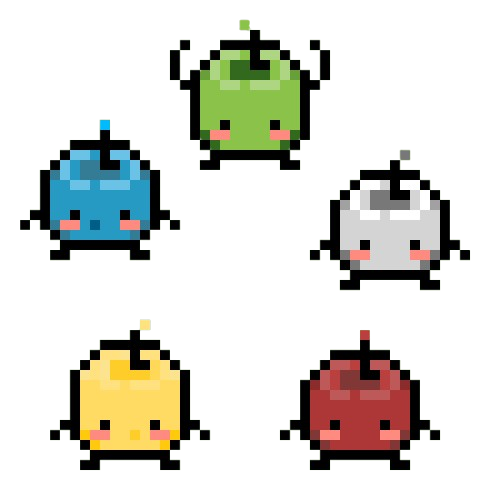

Community Centre & Junimos
Junimos zijn kleine wezens in Stardew Valley die leven in de Community Center.
Ze helpen met het repareren van de Community Center door het voltooien van bundles.
Er zijn in totaal 6 kamers waarvan er in totaal 30 bundles zijn die voltooid moeten worden.
Als Alle bundles voltooid zijn, wordt de Commuhity Centre fixed.

Juminos zijn er in vele verschillende kleuren te vinden.
Als je bij de Wizard een Junimo Hut koopt, kunnen er Junimo's op je farm wonen.
De junimos helpen je dan met het oogsten van je crops.